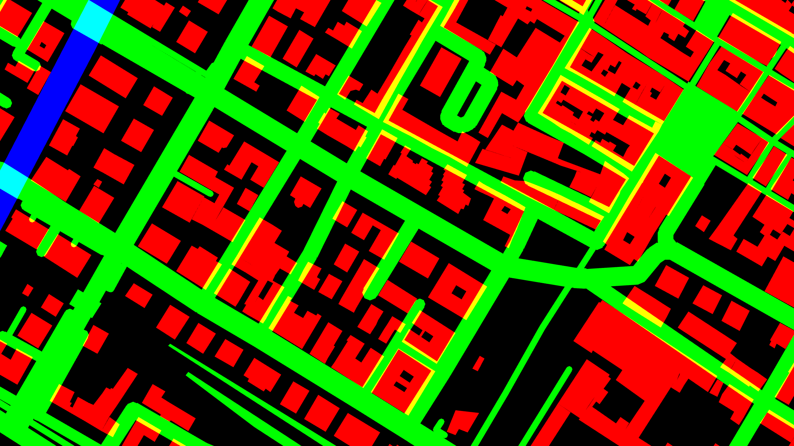
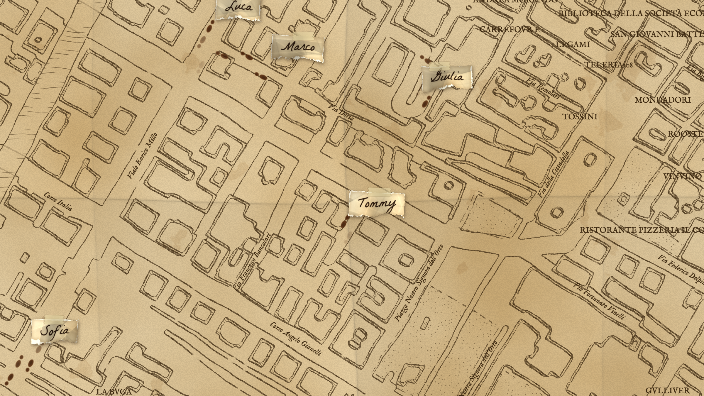

How the ink is drawn
real streets from OpenStreetMap, redrawn by a shader every frame

buildings
streets
water
Ink shader
broad nib pressure
wobbly hand
lines drawn twice
pen lifts
folds and stains

names, footsteps and wall text on top